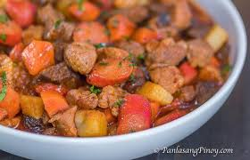

Filipino Menudo Recipe

Filipino Menudo
By PanlaasangPinoy.com
This is a Filipino style Pork Menudo, it is known as a hearty pork stew made with fresh tomatoes, potatoes, carrots, and
garbanzo beans.
It's one of my favorite dishes because how easy to make and delicious. Usually made during special occasions like
birthdays,fiestas, etc.
An event is never trully complete without your Lola's menudo.
Ingredients
- 1 lemon - or 6 big calamansi (optional)
- 1 pound pork - cut into bite-size cubes
- 1/2 pound liver (pork) - cut into bite-size cubes
- 4 pieces hotdogs/sausages - cut into small diagonal slices
- 3 tablespoons oil
- 2 cloves garlic - minced
- 1 medium onion - chopped
- 1 cup tomato sauce
- 2 cups water
- 2 medium potatoes - cut into cubes
- 2 medium carrots - cut into cubes
- 1 1/2 - 2 teaspoons salt
- 1/4 teaspoon ground pepper
- 1 small red bell pepper - cut into squares
Methods
- Mmarinate both the pork meat and liver with calamansi or lemon juice for at least 10 minutes.
- In a deep skillet, saute garlic and onion in oil over medium heat until limp and translucent.
- Add the pork and cook, stirring constantly, until all sides are no longer pink. Pour the tomato sauce and 1 cup water and let it simmer for 15-20 minutes, covered.
- Add the liver and cook for some seconds while constantly stirring until sides are done.
- Then add the hotdogs, carrots, potatoes and bell pepper. Add another cup of water and season with salt and pepper. Cover and let it simmer, stirring from time to time, for 15-20 minutes or until vegetables are cooked. Stir in the green peas and cook for another minute.
- Serve with rice or bread.
Youtube tutorial by PanlasangPinoy: